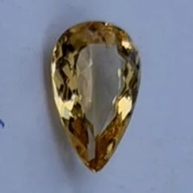
01 · A sua pedra
Você escolhe o topázio
Cada pedra é única e tem código, peso e fotos reais. Você escolhe exatamente a que vai para a sua joia.
Ouro Preto · Minas Gerais
A gema mais rara de Minas, escolhida pedra a pedra onde ela nasce. Aqui você não escolhe uma joia pronta: você cria a sua.
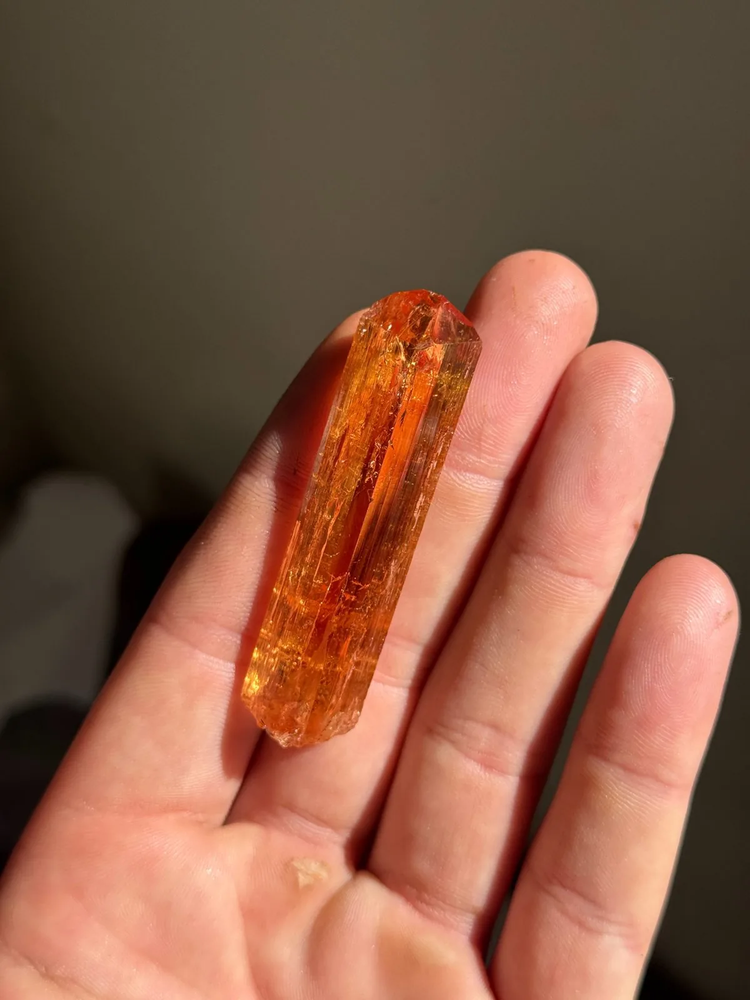
Nosso diferencial
Em vez de escolher uma peça pronta, você participa da construção de uma joia exclusiva: seleciona pessoalmente o seu Topázio Imperial e cada detalhe que vai compor a peça.
Tecnologia 3D, personalização e o valor único de cada pedra, reunidos em um só lugar — da escolha ao atendimento e à compra.

01 · A sua pedra
Cada pedra é única e tem código, peso e fotos reais. Você escolhe exatamente a que vai para a sua joia.
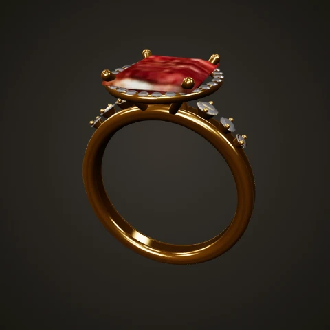
02 · O seu design
Anel, brinco ou pingente: troque o metal e os detalhes, gire a peça em 3D e prove na câmera do celular.
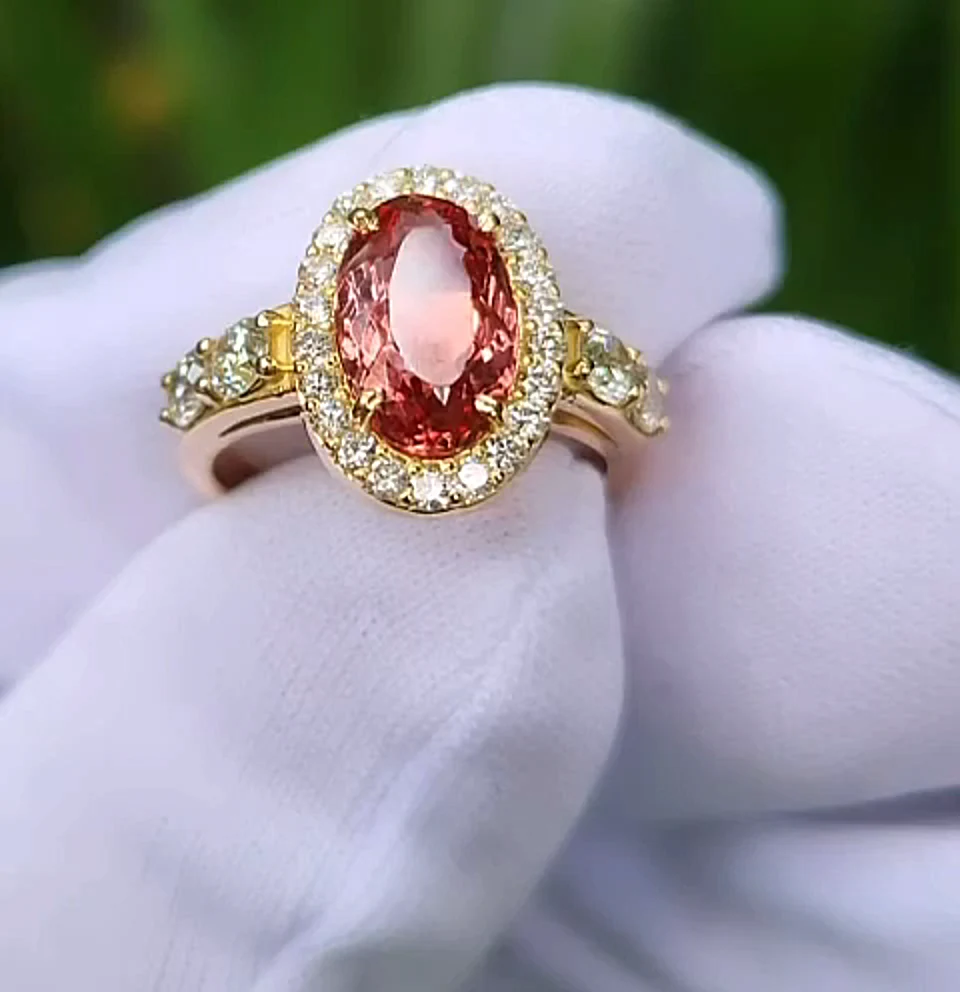
03 · A sua joia
A criação vira uma peça exclusiva, produzida com a pedra escolhida e acompanhada por nós até a entrega.
A pedra
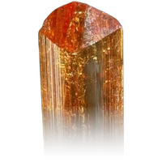
A região de Ouro Preto é a principal fonte de Topázio Imperial do mundo.
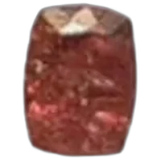
Tons que vão do dourado ao pêssego, do laranja ao rosa-imperial.
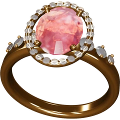
Cristais naturais para coleção e pedras lapidadas prontas para joalheria.
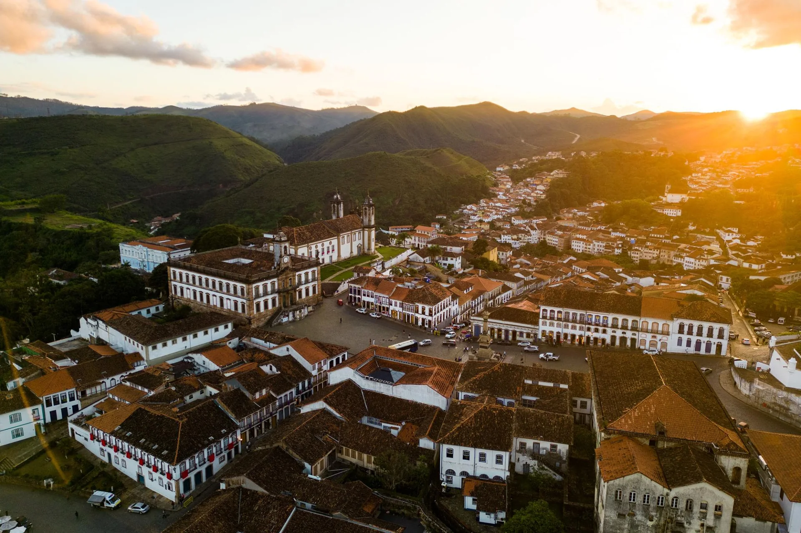
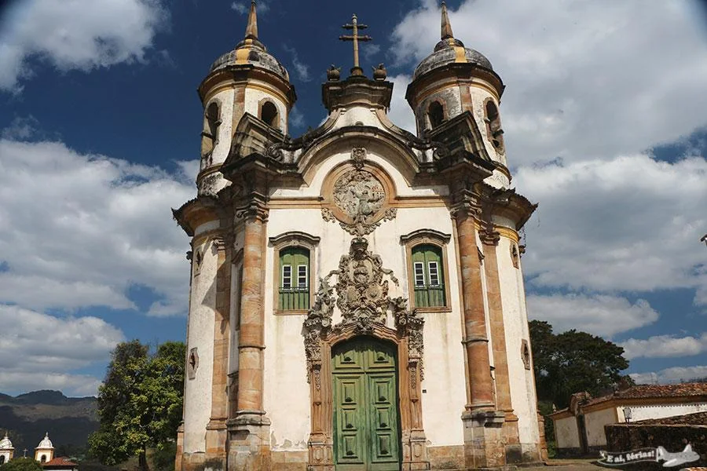
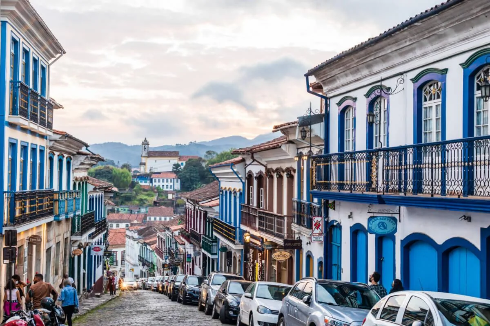
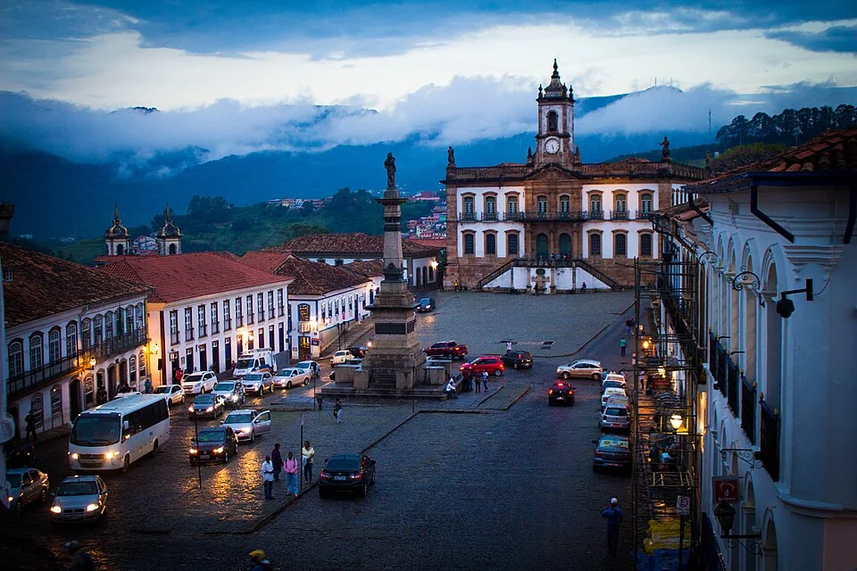
Feito por nós
Topázio Imperial oval, envolvido por um halo de brilhos e montado em ouro. Uma peça única, feita a partir de uma pedra selecionada no nosso estoque — e você pode criar a sua do mesmo jeito.
Nosso processo
Acompanhamos cada pedra em todas as etapas — é por isso que sabemos exatamente o que estamos entregando.
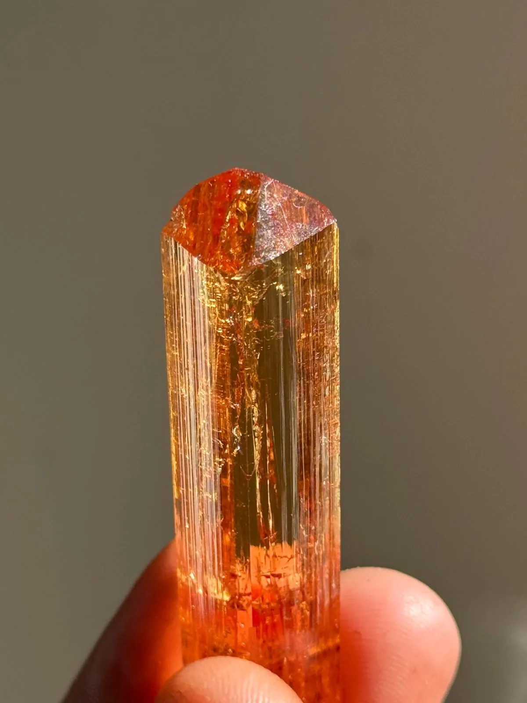
01
Cristais brutos selecionados na região de Ouro Preto.
02
A pedra ganha forma e brilho, faceta por faceta.
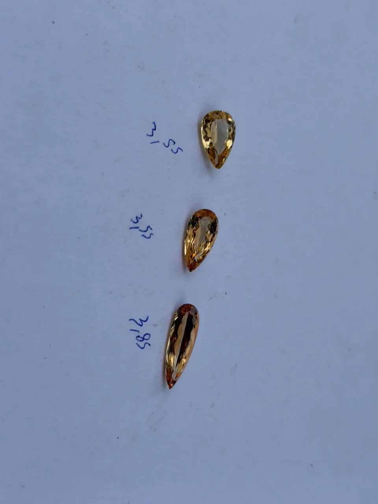
03
Cada pedra é pesada, medida e recebe seu código.
04
A pedra vira anel, brinco ou pingente — sob medida.
Estoque próprio
Do dourado ao pêssego e ao rosa: separamos as pedras por cor, formato e tamanho. Peça fotos e vídeos de qualquer uma delas.
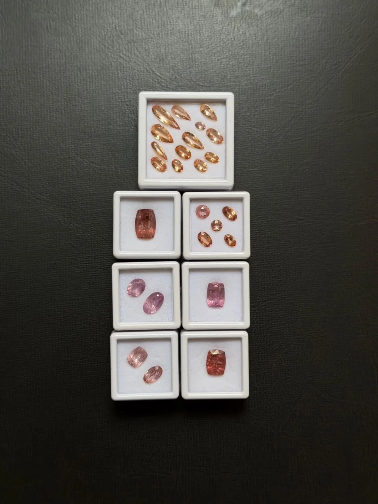
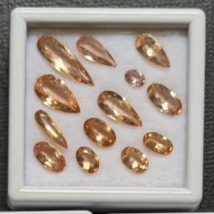
Coleção
Cada pedra é única. Fale com a gente pelo WhatsApp para ver as peças disponíveis, com fotos e vídeos.
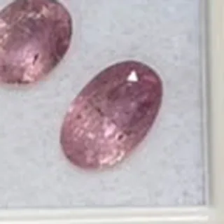
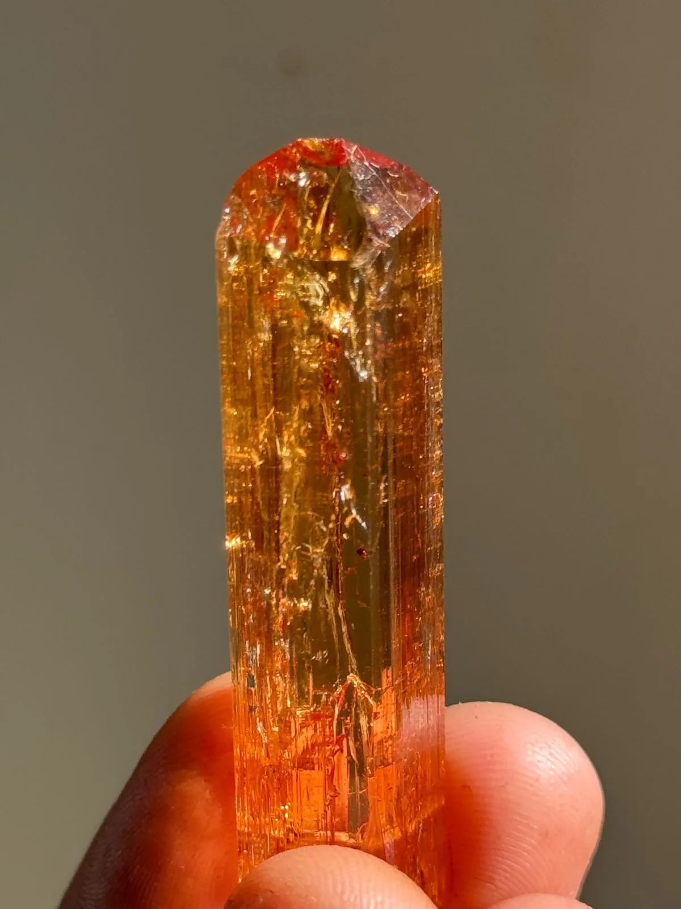
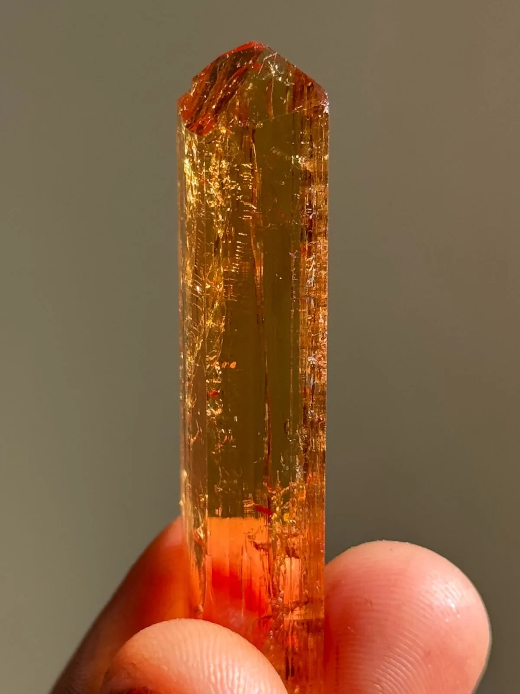
Do garimpo à lapidação
Novo · Ateliê online
Escolha uma pedra real do nosso estoque, o modelo de anel, brinco ou pingente e o metal. Veja a peça em 3D e acompanhe a estimativa de preço a cada escolha.
Como comprar
Conte o que procura: cor, tamanho, bruto ou lapidado, e o uso da peça.
Enviamos fotos e vídeos reais das peças disponíveis, com peso e medidas.
Pagamento combinado no atendimento e envio para todo o Brasil.
Ouro Preto · Minas Gerais
Peças únicas, escolhidas por quem é especialista em Topázio Imperial.
Conheça a origem da pedra Quero minha peçaOuro Preto · MG
Onde o Topázio Imperial nasce
Bruto e lapidado
Do cristal à pedra pronta
Peso e código
Cada pedra identificada
Joias sob medida
Criadas com a sua pedra
Selo de procedência · Ouro Preto, MG
Nascemos em Ouro Preto, a principal fonte de Topázio Imperial do mundo. Trabalhamos com estoque próprio: cada pedra é escolhida por nós, recebe código, peso e fotos reais — você sabe exatamente qual gema será sua.
Origem
Pedras da região de Ouro Preto
Transparência
Código e fotos de cada gema
Atendimento
Direto com especialistas